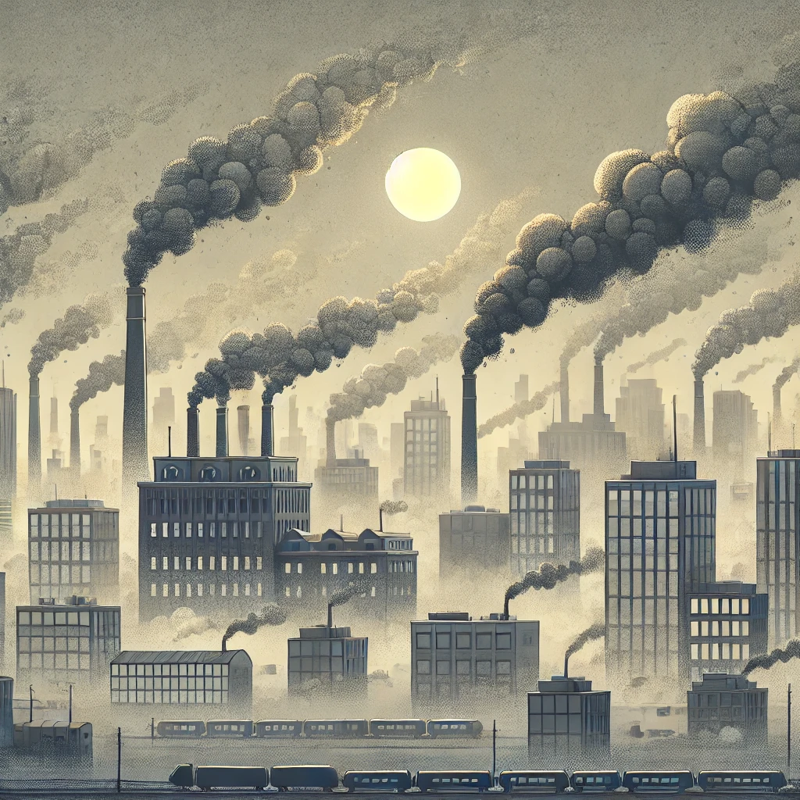

| Portal Ambiental | Últimas Notícias |
|---|---|
Destaques da Semana sobre Meio AmbienteConfira as notícias mais recentes sobre mudanças climáticas, poluição do ar e secas que afetam o planeta. Fique por dentro das atualizações e veja como essas questões impactam nossa vida e futuro. O aumento das temperaturas globais está intensificando eventos extremos, como tempestades e derretimento de geleiras. Conheça as consequências disso em escala global e as soluções que estão sendo propostas. |
|
|
 Com o aumento das emissões industriais, a qualidade do ar continua a piorar em grandes cidades. Saiba como isso afeta a saúde pública e o que está sendo feito para melhorar a situação. |
|
|
O aumento das secas prolongadas está comprometendo a produção agrícola e o abastecimento de água em várias regiões do mundo. Entenda as causas e possíveis soluções para essa crise. |
|
| Portal Ambiental - © Todos os direitos reservados | |